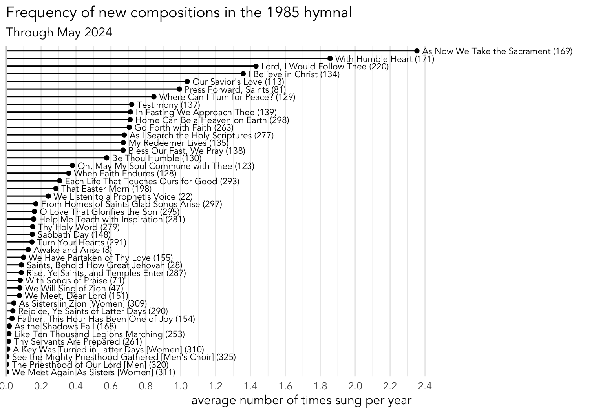
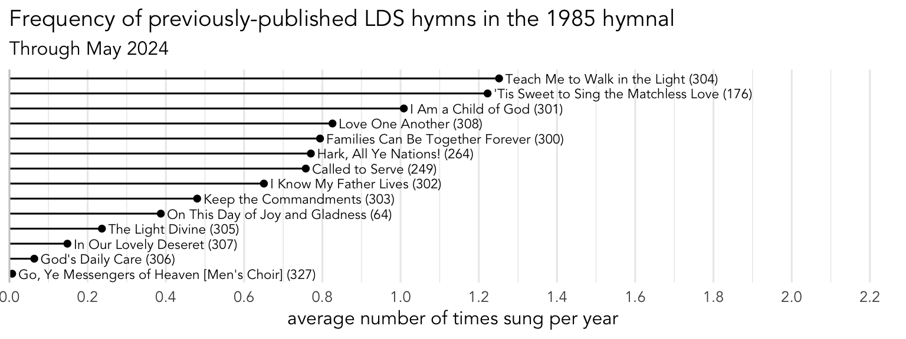
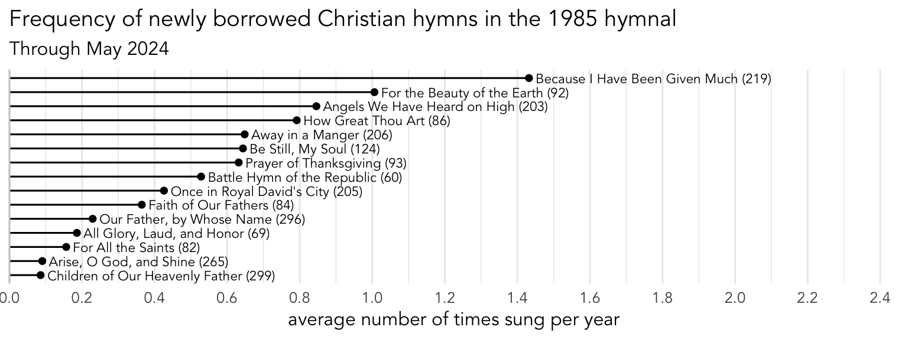
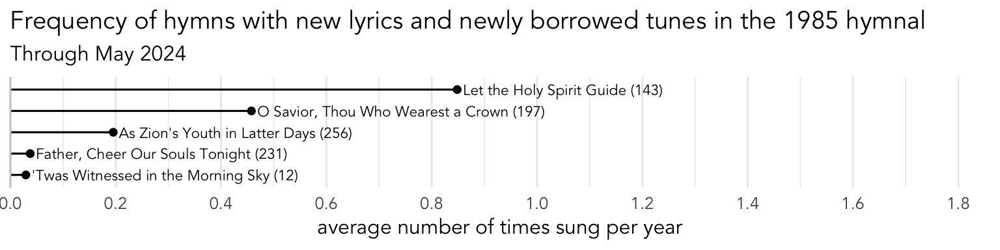

Which hymns were new in 1985 and how popular have they been since then?
general
We are in the middle of a gradual rollout of new hymns. It’s an exciting time! But it’s not the first time the church has introduced new hymns as part of a new hymns. So, I thought it’d be interesting to look at the 92 hymns that were new to the 1985 hymnal to see how they have fared over the past 41 years. Perhaps by looking at how the formally new hymns are used now, we can make a guess for how the current new hymns will be used over the next 41 years.
Note
The list of hymns that I am working with is from this Reddit post, posted on r/LatterDaySaints on July 22, 2024 by an anonymous user. That post takes information that was originally found in the 1988 book Our Latter-day Hymns: The Stories and The Messages by Karen Lynn Davidson. I’ll admit I haven’t fact-checked the Reddit post to the original book, so I acknowledge that there may be a few errors in this post.
New in what way?
I’ll start off by examining the list of hymns and dividing them into categories of their “newness.” As it turns out, there are lots of different ways that a hymn can be new, and it’s interesting to see those differences. For each category, I also include examples from the first five batches of new hymns in Hymns for Home and Church. Let’s break down these hymns and look at what I mean by “new”.
New compositions
The largest category of new hymns are ones with brand new texts and tunes. These 44 hymns are entirely new compositions. Among the most popular of these include
We have some very commonly sung ones, including sacrament and non-sacrament hymns. We also have some that are not sung very often at all, including some men’s and women’s hymns at the back of the hymnal and others. So in this category, we have the full range of hymns.
Previously-published LDS hymns
The next category of hymns are ones that were previously published in various church music publications or were otherwise part of the music repertoire of the church and then became “canonized” by being put into the hymnal in 1985.
One of the more popular ones from this category include
Some of the more popular hymns in Hymns for Home and Church that would belong in this category include
Here is a plot showing the popularity of the hymns that fall into this category in the 1985 hymnal. There are fewer of them and they span a range of frequencies. Some are pretty popular, being sung one or more times per year on average per ward. Others are far less common.

One pattern that I can’t help but notice is that many of the new hymns that fall into this category were originally written for children. The same is true for the Hymns for Home and Church. While that’s not necessarily a bad thing, I’ve shown already that hymns arranged for unison singing tend to be a little less popular than ones arranged for SATB. In general though, these ones from the 1985 hymnal are doing pretty well—better on average than the other brand new compositions. In the second half of this post, I show statistical support for that. If the trend holds true in the latest rollout of new hymns, we may see that these new hymns get a little more common as the years pass.
New English translations
One sub-category that I should mention is that there are hymns that are new to the English hymnal because they are (new) translations of hymns in Latter-day Saint hymnals in other languages. There are several among the new hymns, like
Existing Christian hymns
The next category includes hymns that previously existed in Christiandom but for whatever reason were not included in an LDS hymnal. The most popular one in this category is
There are lots of recent new hymns that fall into this category. One of the most popular is
The following plot shows the popularity of these hymns from the 1985 hymnal. Two have become very popular and are sung one or more times a year on average:

As will be shown below, this category tends to produce commonly sung hymns. I suspect that we will see more of these hymns from other Christian hymnals being incorporated into the new hymnal and if the data from the past 40 years is any indicator, we may find that these new ones in Hymns for Home and Church are likewise among the more common hymns.
New texts with newly borrowed tunes
The next categories of hymns are ones that are partially new. These are ones where either the text or the tune already existed in the previous edition of the hymnal from the 1950s but were paired with something new—or at least new to us. It may seem weird to mix and match texts with tunes, but keep in mind that that was once common practice, which is why we have a meters index in the back of the 1985 hymnal. My understanding is that it’s a relatively recent thing for a text and tune to be tightly associated with each other.
The first category in this type are hymns where the lyrics are new and they were paired with tunes that already existed but not in our hymnal. So, someone who is unaware of hymns outside of our church would see these as new compositions while converts would at least recognize the melody. There are only five hymns that fit this category, the most popular of which is
1 7th grader me was surprised to hear that melody in a piece we played in band class!
One example of this kind of hymn in the newly-released collection is
Here is a plot showing the popularity of the five hymns in this category in the 1985 hymnal. There are two that are somewhat common, one that is only sung about once every five years, and two that are very uncommon.

Existing texts with new tunes
The previous category was about new texts being paired with existing tunes. This category is the opposite: texts that existed in the previous hymnal but were paired with newly written tunes. One example of this is the
The following plot shows the six hymns that fit this category in the 1985 hymnal. As you can see,
2 Perhaps

So, pairing a familiar text with a new tune was not a very common thing even 40 years ago and I suspect it’ll be at least as rare if not rarer. Perhaps a music historian or something can write to me if they know whether mixing-and-matching tunes with texts is less common than it used to be generally.
New texts with existing tunes
One type of new hymn that is worth mentioning is a newly written text paired with a tune that already existed in the hymnal. As far as I know, we didn’t see this in the 1985 hymnal. Technically, we have one so far among the new hymns. The text to
Existing texts with existing tunes
The last category of hymns includes ones where there was an existing text in the earlier hymnal but the tune was changed to something that already existed outside our church and was newly borrowed for the 1985 hymnal. One hymn in this category is
3 I remember playing that traditional tune in middle school band class too!
The one partial case that I can find in the new hymnal is the last verse of
Here are the the hymns from the 1985 hymnal that fall into this category. As you can see, there aren’t too many of them and none are especially popular.

Interim summary
So, there are about eight different ways that a hymn can be new:
- Brand new compositions (
Press Forward, Saints (#81) orAs Bread Is Broken (#1007) ) - Previously published Latter-day Saints hymns (
Teach Me to Walk in the Light (#304) orI Will Walk with Jesus (#1004) ) - New English translations of Latter-day Saint hymns in other languages (
Jesus Is the Way (#1045) ) - Existing Christian hymns with an established tune and text pair (
Because I Have Been Given Much (#219) orIt Is Well with My Soul (#1003) ) - New texts with tunes that already existed but are new to us (
Let the Holy Spirit Guide (#143) orLet Easter Anthems Ring (#1205) ) - Texts that already existed in the hymnal but were paired with newly composed tunes (
God Bless Our Prophet Dear (#24) ) - Newly written texts that are paired with with a tune that was already in the hymnal (
Our Prayer to Thee (#1048) ) - Pairing an existing text with a tune that existed alrady but not in our hymnal (
If You Could Hie To Kolob (#284) orHis Voice as the Sound (#1040) )
Just in sheer numbers, the brand new category is the biggest in the 1985 hymnal. That’s followed by previously published LDS hymns and borrowing established Christian hymns.
The following plot shows all 92 new hymns, color-coded by their category. As you can see, these range from very common sacrament hymns all the way down to extremely uncommon hymns and choir arrangements.

The question I have now is this: all things considered, which category is the most likely to produce commonly sung hymns? Let’s jump into a statistical analysis to explore that a little further.
Which categories are most popular?
Recently, I did an analysis of the 60 new hymns from the first five batches. The analysis was among my more technical posts since I dive into some actual statistics.
The gist is this though: I wanted to see what factors influence how common a new hymn has been so far. I included things like what batch it came from, whether it was arranged in SATB or in unison, whether it has a more complex “flow”, whether it’s a holiday hymn, whether it’s a sacrament hymn, and whether it’s an existing hymn. I’ll apply the same methods here as I did in that analysis, although I won’t go into as much detail on the statistical side of things.
NoteStatistical details for nerds
For those that are curious, I ran a linear regression model on the 91 observations in this dataset. I excluded
For independent variables, I included the category it belongs to from the categories listed above, whether it’s a Christmas hymn, whether it’s an Easter hymn, whether it’s a sacrament hymn, whether it’s a children’s hymn (i.e. hymns 301–308), whether it’s a men’s/women’s arrangement (i.e hymns 309–337), and whether it’s arranged in something other than straight SATB. All were binary variables except for category.
That’s a lot of variables for not a lot of data and I didn’t want the a bunch of nonsignificant predictors to chew up the statistical power for analyzing the category variable, which was my primary focus. So, I removed variables iteratively in a step-down procedure until I settled on a model that had the lowest BIC score. Doing so removed the variables for Easter, Christmas, Children’s and not-SATB arrangements and retained category, sacrament and whether it’s an arrangement. (That makes sense: sacrament hymns make a hymn way more popular and arrangements make a hymn way less popular.)
The model was a pretty good fit to the data with an \(R^2\) values of 0.542. A Shapiro-Wilk test suggests that the residuals were normal (\(W\) = 0.975, \(p\) = 0.081).
Here is the summary for the final model:
Call:
lm(formula = prop_wards_trans ~ is_sacrament + category + is_arrangement,
data = weekly_results)
Residuals:
Min 1Q Median 3Q Max
-3.1387 -1.0115 0.1172 1.1854 2.7043
Coefficients:
Estimate Std. Error t value Pr(>|t|)
(Intercept) -5.67284 0.38903 -14.582 < 2e-16
is_sacramentTRUE 2.79628 0.74922 3.732 0.000346
categoryexisting text with borrowed tune -1.90819 0.63758 -2.993 0.003640
categoryexisting text with new tune -2.88540 0.70340 -4.102 9.51e-05
categorynew text with borrowed tune -1.24605 0.74938 -1.663 0.100131
categorynewly borrowed 0.03664 0.53674 0.068 0.945734
categorytotally new -0.81094 0.44177 -1.836 0.069990
is_arrangementTRUE -4.69992 0.57532 -8.169 2.99e-12
(Intercept) ***
is_sacramentTRUE ***
categoryexisting text with borrowed tune **
categoryexisting text with new tune ***
categorynew text with borrowed tune
categorynewly borrowed
categorytotally new .
is_arrangementTRUE ***
---
Signif. codes: 0 '***' 0.001 '**' 0.01 '*' 0.05 '.' 0.1 ' ' 1
Residual standard error: 1.432 on 83 degrees of freedom
Multiple R-squared: 0.5779, Adjusted R-squared: 0.5423
F-statistic: 16.23 on 7 and 83 DF, p-value: 2.807e-13Before I get to my primary focus, the category, I’ll first explain the other variables. I found that whether a hymn is an Easter hymn, a Christmas hymn, a children’s hymn, or an arrangement that isn’t a straightforward SATB had no influence on how popular it was, once all the other variables were accounted for. I did find however, unsurprisingly, that sacrament hymns were more popular. On average, holding all other things equal, if a hymn is a sacrament hymn it was sung in 2.81% more sacrament meetings, making it 11.76 times more popular than a non-sacrament hymn. Also unsurprisingly, if a hymn is marked as a men’s or women’s arrangement, it was quite a bit less popular. It was sung in 0.41% fewer sacrament meetings, which may not seem like a lot until you realize that the average number of sacrament meetings for these hymns in about 0.52%. Overall, these arrangements are a whopping 92.6 times less popular than an equivalent SATB hymn.
As interesting as that is, now let’s focus on the whole point of this blog post—seeing whether the category of new hymn has an influence on how popular a hymn was after being introduced in the 1985 hymnal. The following table shows the percent of sacrament meetings each hymn is predicted to be in each week. This is after accounting for whether it’s a sacrament hymn and whether it’s a women’s or men’s arrangement.
| Estimated popularity new-to-1985 hymns are sung in, by category | ||||
| category | n hymns | times per year | every n years | percent of meetings |
|---|---|---|---|---|
| previous LDS | 14 | 0.40 | 2.5 | 0.84% |
| newly borrowed | 15 | 0.23 | 4.3 | 0.48% |
| totally new | 43 | 0.16 | 6.4 | 0.32% |
| new text with borrowed tune | 5 | 0.07 | 13.4 | 0.16% |
| existing text with new tune | 6 | 0.05 | 20.1 | 0.1% |
| existing text with borrowed tune | 8 | 0.04 | 27.2 | 0.08% |
| Based on 91 new hymns in the 1985 hymnal, after accounting for whether a hymn is a sacrament hymn and whether it's a women's or men's arrangement. | ||||
Here you can see that the most popular new hymns in the 1985 hymnal are ones that were previously published in some Latter-day Saint publication already. Each of these hymns accounts for about 0.82% of sacrament meetings, which is about 0.39 times per year, or once every 2.5 years. That number may not seem like a lot, but keep in mind that there are 14 hymns in this category and, on average, all 14 will be sung every two and a half years. So, you’ll likely see one about every other month. The totally new ones were less popular, but between the 48 of them, you’re also likely to see one about every other month. Adding all these together, it looks like at least one of the 91 hymns was sung in 34% of sacrament meetings. That means people have been singing at least one “new” hymn every three weeks for 41 years.
To put that in today’s terms that’s like seeing one of those four-digit new hymns every three weeks for the next several decades.
That’s actually pretty close to the numbers we actually see. I have data from 50,340 sacrament meetings since the new hymns came out. Of those, 20,010, or 39.7%, contained at least one new hymn. So, we’ve been a little more eager to sing new hymns in 2024–2026 than we were in 2002–2024, but after a decade or so I suspect that those numbers will wane a little bit and we’ll settle to about the same range.
Now, maybe it’s the case that there’s nothing special about those new hymns. Maybe any random selection of 91 hymns would be sung in about a third of the sacrament meetings. So, to test that, I got a random sample of 91 hymns from the 1985 hymnal, ensuring that exactly four of them were sacrament hymns and exactly eight of them were arrangements at the back of the hymnal, just as we see with the 1985 new hymns. I then queried my data from before June 2024 and got the proportion of sacrament meetings that contained at least one of those hymns. I repeated that experiment 1000 times. The figure below shows the results of that.

As you can see, random selections of 91 hymns are far more popular. They are normally distributed4 with an average of 59.8% and a standard deviation of 3.15%. The probability of a random set of 91 hymns being collectively as infrequent (or less) as the new set in 1985 is \(4.29\times10^{-16}\). This suggests that the new hymns in 1985 are actually not more common and in fact are collectively quite a bit less common. To me, this suggests that we value the long-standing hymns in our sacrament meetings and it may take generations for something to catch on.
4 This is confirmed by a Shapiro-Wilk test, \(W\) = 0.999, p = 0.895.
Going back to the statistical model, the differences between some pairs were statistically significant. The difference between newly borrowed (Protestant) hymns and hymns previously appearing in Latter-day Saint publications, was not significant. The difference between them and new texts with borrowed tunes and totally new hymns was marginally significant. But the difference between them and existing texts with either borrowed or new tunes was significant. Basically one could argue we have three tiers of popularity: the previously published ones, the new texts, and the existing texts. This matches somewhat my findings for Hymns for Home and Church where previously published LDS hymns were the most common category.
Conclusion
In this post, I’ve done a deep dive into the hymns that were new in 1985 and compared their patterns to the new hymns in Hymns for Home and Church. There are perhaps eight different ways that a hymn can be new, and we see examples of most of them in 1985 and in the recent new hymns. I then ran some statistics to see whether the category of new hymn correlates with how popular the hymns are. After accounting for sacrament hymns and the arrangements in the back of the hymnal, I found that previously published hymn were the most common, which matches what was found for the recent new hymns.